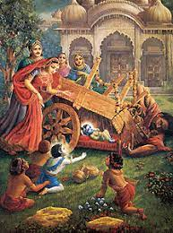
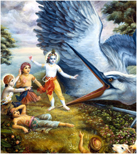
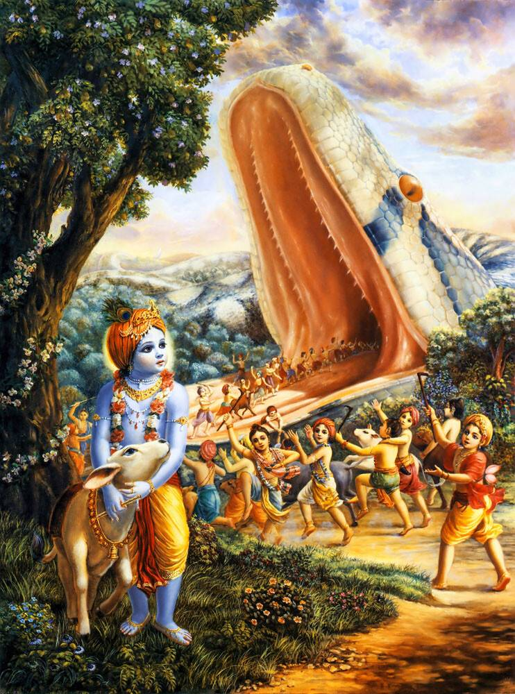
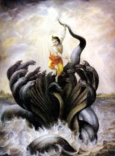

Lord Krishna, one of the most revered deities in Hinduism, is known for his divine playfulness, wisdom, and miraculous deeds. Among his many feats, the vanquishing of various demons and monsters stands out as a testament to his divine powers and his role as the protector of dharma (righteousness). These stories, narrated in ancient scriptures like the Bhagavata Purana and Harivamsa, highlight Krishna's courage, compassion, and his unwavering commitment to protect the innocent from evil forces.
The following sections describe some of the most significant events where Krishna defeated powerful demons, each representing a unique form of evil. These stories not only showcase Krishna's strength but also carry deep symbolic meanings, illustrating the victory of good over evil.
Another early encounter was with the demon Sakatasura, who took the form of a heavy cart. This demon tried to crush baby Krishna by toppling the cart over him. However, with a simple kick of his tiny foot, Krishna overturned the cart, killing Sakatasura instantly.
Sakatasura represents the burden of old and outdated beliefs or karmas that can stifle spiritual progress. Krishna's effortless destruction of Sakatasura symbolizes the power of divine consciousness to overcome the heavy burdens of the past.
Bakasura, a demon in the form of a giant crane, attacked Krishna and his friends while they were grazing cattle. The demon tried to swallow Krishna, but Krishna, using his divine powers, tore apart Bakasura’s beak, killing him instantly.
Bakasura represents the hypocrisy of those who present themselves as virtuous while harboring evil intentions. Krishna’s victory over Bakasura symbolizes the exposure and destruction of hypocrisy by the light of truth.
Aghasura, the brother of the demons Putana and Bakasura, was a monstrous serpent sent by Kamsa to kill Krishna and his friends. Aghasura opened his gigantic mouth wide, intending to swallow the entire group. However, Krishna, understanding the demon’s intentions, entered his mouth and expanded his body, causing Aghasura to suffocate and die.
Aghasura represents the all-consuming nature of evil and sin. Krishna’s triumph over Aghasura demonstrates the inevitable defeat of evil when confronted by divine will and righteousness.
The serpent Kaliya lived in the Yamuna River, poisoning its waters and terrorizing the inhabitants of Vrindavan. Krishna, diving into the river, subdued Kaliya by dancing on his multiple hoods, eventually forcing the serpent to surrender. Kaliya, along with his family, was then exiled from the Yamuna.
Kaliya represents the poisonous effects of hatred, jealousy, and malice. Krishna’s subjugation of Kaliya symbolizes the purification of these toxic qualities through divine intervention and the restoration of harmony.
The stories of Krishna's victories over demons and monsters are more than mere tales of heroism. They are allegories filled with profound spiritual meanings, each battle representing the conquest of good over evil, light over darkness, and divine wisdom over ignorance. Through these stories, Krishna's role as the protector of dharma and the savior of the innocent is clearly depicted, inspiring devotees to lead a life of virtue and devotion.
These narratives also remind us of the constant presence of divine protection in our lives. Just as Krishna protected the people of Vrindavan from various dangers, the divine continues to guide and protect us in our spiritual journey, helping us overcome the inner and outer demons we face.
In essence, Krishna's defeat of these demons serves as a metaphor for the challenges we encounter in life and the divine assistance that is always available to help us overcome them. The stories inspire faith, courage, and the unwavering belief that with divine grace, we can conquer any obstacle on our path to righteousness.